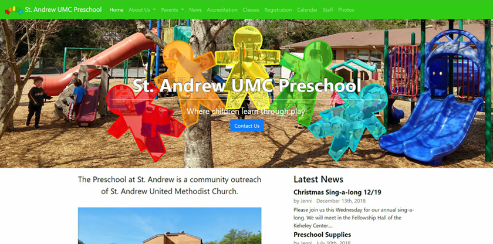
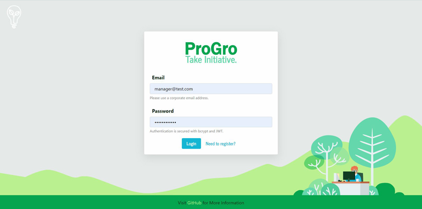
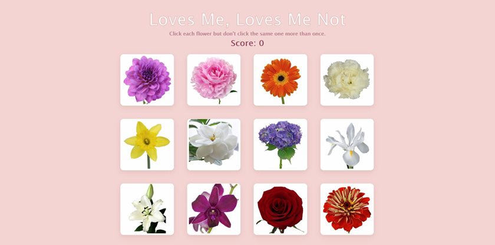
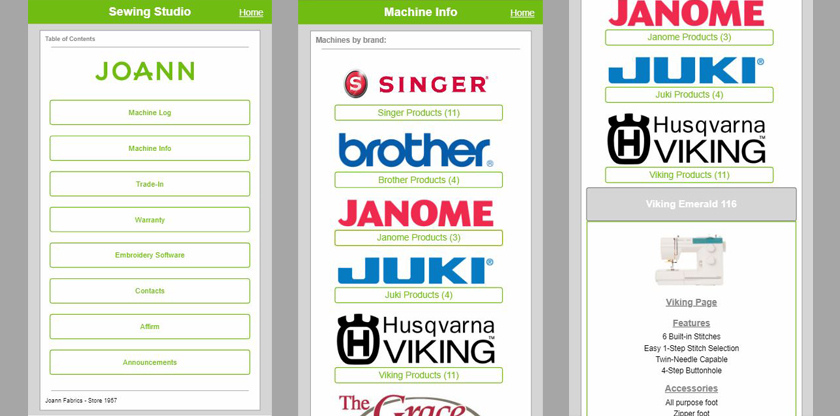
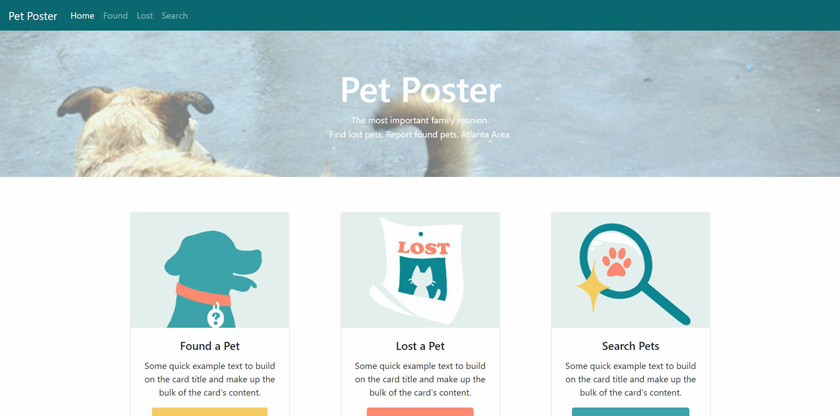

Hello
World
I am a full stack web developer and graphic artist who designs and codes beautiful websites. I
pride myself in being a creative problem solver from a diverse background which allows me to
offer
unique insights. I am a graduate of Georgia Tech's Full Stack Web Development Bootcamp and have
a
four year bachelor's degree in Fashion Merchandising with an emphasis in Product Development
and
Design from the University of Georgia.
I work with a variety of technologies including HTML5, CSS, JavaScript, Mongo.db, Express,
REACT,
Node, MySQL, and many others. I adapt to new technologies quickly and am a continuous learner.
My
artistic talents lend me well to front-end technologies as well as web and graphic design. I am
familiar with the Adobe Creative Suite with a strong background in Photoshop and Illustrator.
Currently I am looking for a job which utilizes my skills and challenges me as a developer.
Portfolio

St Andrew Preschool
The Preschool at St. Andrew is a community outreach of St. Andrew
United Methodist Church. I updated their web presence with a modern design that is easier to
navigate and mobile friendly.

ProGro
This Web App is a platform for employers to source innovation from
within. It empowers employees to propose projects and collaborate with among themselves to grow
their company.

Flower Shuffle
This is memory game utilizing HTML5, CSS3, JavaScript, and ReactJS.
The player is attempts to click each unique image without repeat while the images shuffle
randomly between clicks.

Joann Sales Assist
I developed this mobile web app to be used the the sewing machine
sales team at JoAnn Fabrics. It was used by my team to track inventory and
provide quick access to important machine information. It was a project that was constantly
evolving and growing when in use.

Pet Poster
This project helps users find their lost pets or report found pets in
the Atlanta area. It utilizes the collective input of the community to create searchable
profiles of pets in an effort to reunite families.
Contact Me